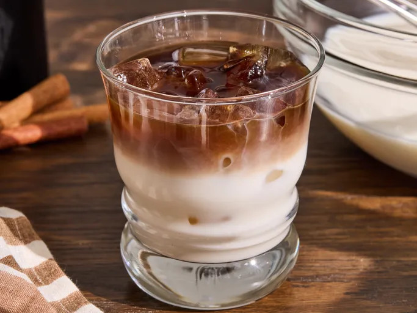

Home
Check Out The Original
Dirty Horchata

Description
This dirty horchata is an iced espresso drink that begins with homemade horchata. Sweetened condensed milk balances espresso’s gently bitter notes for a creamy, refreshing sip. The horchata makes enough for about 10 drinks, so store the extra in the refrigerator and enjoy another anytime.
Ingredients
- 1/2 cup uncooked white rice
- 1 (3 inch) cinnamon stick, broken into pieces
- 4 cups water
- 1/2 (14 ounce) can sweetened condensed milk
- 1 cup milk
- 1 teaspoon vanilla extract
Directions
- For horchata, combine rice, cinnamon sticks, and water in a container and let stand for 2 hours.
- Drain rice and cinnamon sticks, but save the water. Combine rice and cinnamon sticks in a food processor or powerful blender. Process or blend until mixture resembles coarse sand.
- Place rice mixture back into soaking water and let sit for 2 hours, stirring occasionally.
- Strain rice mixture through a fine sieve into a container. Add sweetened condensed milk, milk, and vanilla extract. Stir until well combined and refrigerate horchata until ready to use.
- For each dirty horchata, fill a glass with ice cubes and pour 1/2 cup (or as needed) horchata into the glass. Top with espresso; add cold brew coffee to taste.